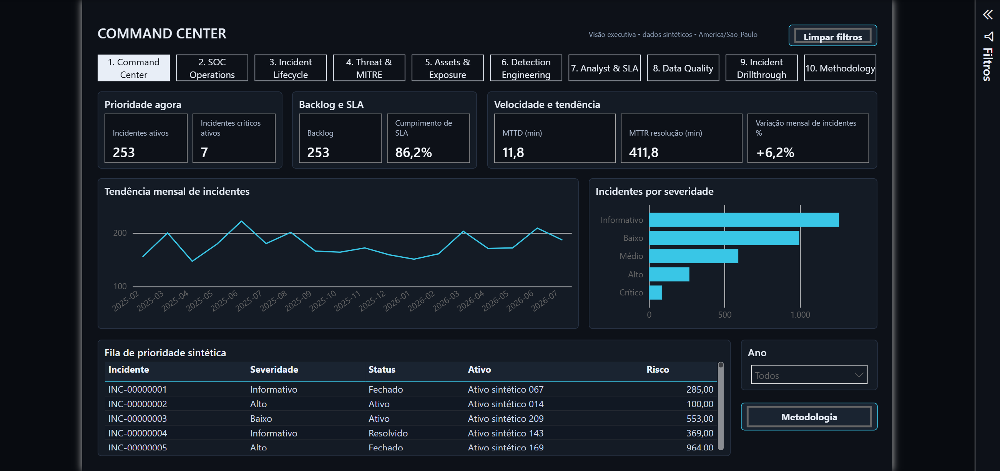
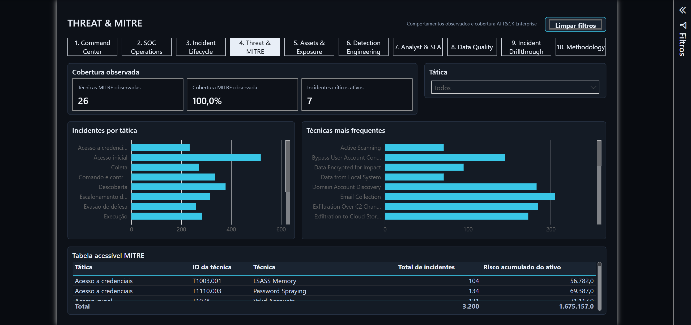
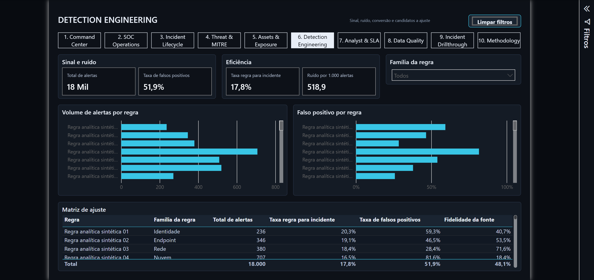
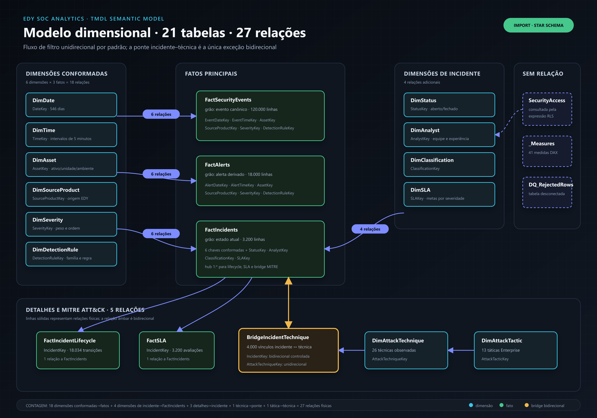
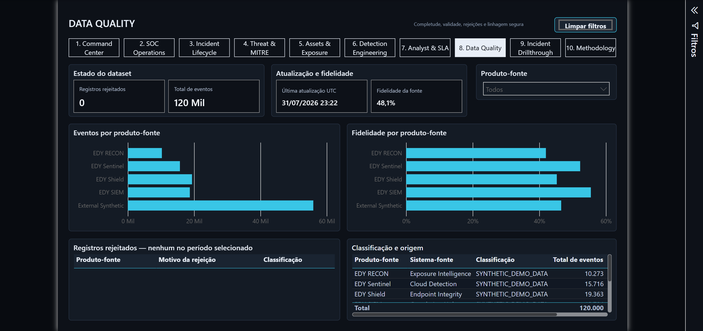

Projeto independente de portfólio
EDY SOC Analytics
Power BI aplicado à análise operacional de um SOC
1 / 5

Power BI · DAX · TMDLMITRE ATT&CKDados 100% sintéticos

Táticas, técnicas observadas e risco acumulado.

Volume, ruído, conversão e falsos positivos por regra.


